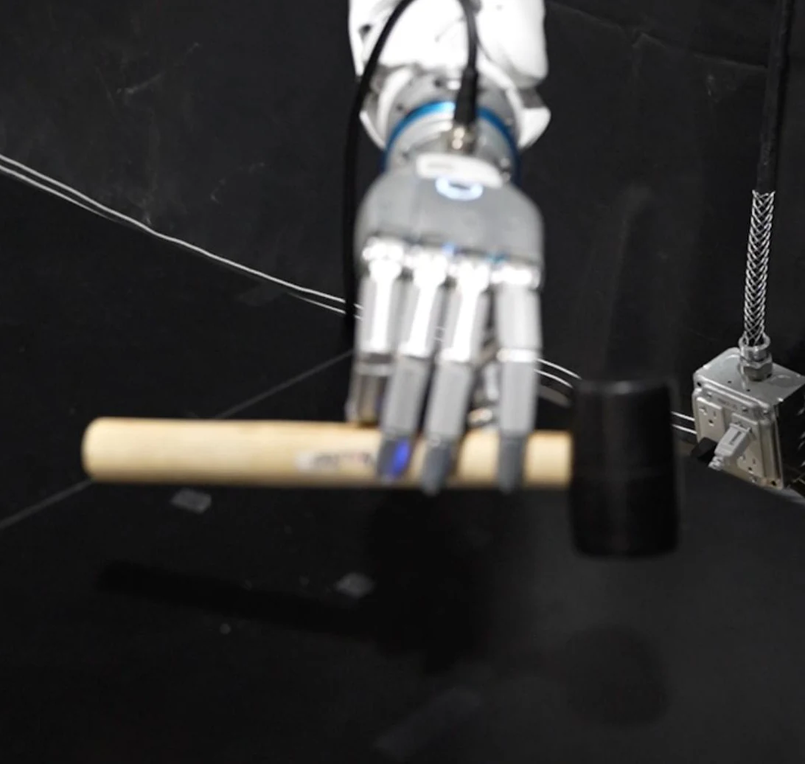
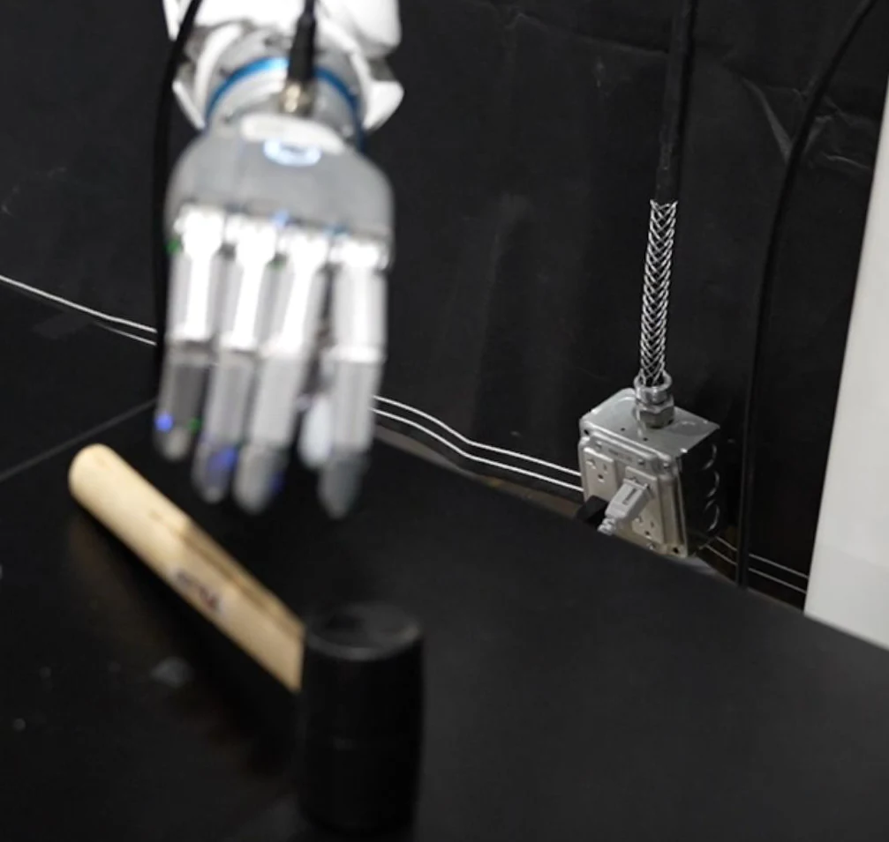

A copied hand pose misses the contact
Most retargeting copies fingertip positions or joint angles from the human hand to the robot. Robot fingers have other lengths and other pads, so the copied pose misses the contact: the pad hovers, a neighboring finger takes it, or the pad meets the object at an angle where the push slips. In our tests the kinematic baselines leave a median gap of 20 to 25 mm. CARD retargets the contact instead. For each region of the hand it keeps where the human pressed, which way and how hard (a contact anchor), then solves for a robot pose whose matching pad does the same.
 Human
Human Human
HumanTwo video clips retargeted to the SHARPA Wave. Orange spheres are the contact anchors taken from the human hand; the object is drawn only for reference.
What the solver scores at one contact
A contact anchor C_f=(c_f,\hat d_f,F_f) holds a point on the surface of hand region f, a unit push direction into the object and a force. Within one frame the robot pad is scored on two things: the distance from its selected point s^*_f to c_f, and the angle between its normal and the push. A third term keeps that point from sliding between frames. The paper prices them so that a 30° tilt costs as much as a 5 mm miss. Drag the pad, or turn it with the slider.
Cost per anchor, in mm²: \lVert s^*_f-c_f\rVert^2+\lambda r^2\,(1-\hat n\cdot\hat d_f) with \lambda=2, r=10 mm. The chips use the paper's evaluation rules: within 2 mm on the palmar face, and a normal within 45° of the push.
Video, glove and motion capture become the same thing
The three sources measure different signals. CARD reduces each one to a MANO hand mesh over time (MANO is the standard parametric model of the human hand), a fixed set of hand regions (three per finger, plus the palm) shared by every source and every robot, and at most one contact anchor per region and frame. One set of solver weights then serves all three sources.
HaWoR tracks the hand in world frame and Vid-HACO, our video contact model, marks which of the 778 MANO vertices touch the object. Video measures no force, so forces come from a whole-clip balance step: the smallest smooth correction that drives each grasp's net wrench toward zero. 47 of the 67 clips we recorded are phone videos.

A 744-taxel pressure grid gives contact and pressure directly, each taxel registered to a personalized MANO mesh, and a wrist tracker gives the hand motion. Each region's center of pressure and force come from the taxel readings, and its push direction from the pressure-weighted surface normals. Glove clips are where contact is best measured, and where CARD keeps the most of it: 89% of anchor-frames.


An OptiTrack-rigged hand wearing the same glove adds drift-free wrist motion and a tracked object mesh. Public datasets with annotated hands and objects, such as GRAB, enter through their own annotations; the 100 GRAB clips are where CARD is compared with ReGrind, which needs the object mesh.
Hover or tap a tile to see the contact on the MANO hand. Video contact is binary per vertex; glove and motion-capture contact is the taxel reading.
Contact from video: Vid-HACO
Vid-HACO reads an 8-frame clip with a V-JEPA 2.1 encoder and a DPT decoder and predicts contact for each MANO vertex, plus whether the hand touches anything in the frame. It is trained on 1.55M frames from 12 datasets. On HRDexDB, which it never saw, vertex F1 goes from 63.3 to 67.2 and average precision from 54.3 to 72.2 against the released HACO, the prior image-based hand-contact model. The clips show both models on the same in-the-wild video.
Each frame's header reports whether the right hand is in contact. Both clips play on one clock; drag the bar to compare a moment. These clips were made with an earlier version of the model.
Retraining HACO on our data (HACO-R) lifts its in-distribution F1 from 57.1 to 74.5 but buys nothing on HRDexDB, so the gain comes from the model: video input, a video-pretrained encoder and training on every frame. Both HACO models flag contact on every frame and score exactly the trivial frame F1 of 75.9, where Vid-HACO reaches 95.3 held out. In CARD, a contact predicted during a reach would pull a robot finger onto empty space.
From anchors to a robot pose
Each frame is solved for the wrist pose and all joint angles of the robot hand, q=(t,R,\theta), 22 joints on the SHARPA Wave. No simulator enters the solve. Penetration is checked against the convex hull of the anchors for video, and against the tracked mesh for motion capture and GRAB. Click a stage to find it in the paper's overview figure.
Contact, style for the free fingers, smoothness from the previous frame, and collision. One set of weights serves video, glove and motion capture. The objective is non-smooth, so each frame runs 16 rounds of 1024 candidates on the GPU, warm-started halfway between the previous solution and the initializer.
Reach, friction cone and anti-slip at the selected pad point s^*_f. The force weight \rho_f=1+\tfrac12F_f/\max F makes harder contacts pull harder.
Starting from the initializer, the contact solve raises contact from 25% to 44%
The closed-form initializer alone places the demonstrated contact on 25.2% of anchor-frames on our clips, ten times more than the kinematic baselines. The contact solve raises that to 43.6%, and the share of anchor-frames where the pad also faces the push from 5.7% to 18.3%. Drag across a render to compare.


The initializer is left of the bar and CARD right of it; the solve moves the pads the last millimeters onto the orange contact anchors.
Retargeted from a phone video, drawn back into the frame
A visualization, not part of the paper's evaluation: the person is masked and painted out of the original shot, and the retargeted SHARPA Wave on its arm is composited where their hand was.
Contact kept on 43% of contact frames, against under 5% for kinematic retargeting
We retarget 167 demonstrations to the SHARPA Wave: 67 clips we recorded (47 phone videos, 18 glove clips, 2 motion-capture clips) and 100 GRAB clips with ground-truth object meshes. A contact counts as established when the anchor is within 2 mm of the assigned link on its palmar face. Rates count anchor-frames: one contact anchor in one frame.
Show the full table
| CARD | DexPilot | AnyTeleop-K | AnyTeleop-P | ReGrind | CARD (init only) | |
|---|---|---|---|---|---|---|
| Our 67 clips (video, glove, motion capture) | ||||||
| Contact rate (%) | 43.6 | 2.5 | 2.5 | 2.4 | – | 25.2 |
| Correct finger (%) | 41.3 | 2.5 | 2.5 | 2.4 | – | 23.9 |
| In cone (%) | 18.3 | 1.0 | 1.1 | 1.3 | – | 5.7 |
| Gap, median (mm) | 3.31 | 24.23 | 24.55 | 25.06 | – | 11.52 |
| GRAB (100 clips) | ||||||
| Contact rate (%) | 43.1 | 4.9 | 4.9 | 4.6 | 22.5 | 19.6 |
| Correct finger (%) | 40.6 | 4.8 | 4.9 | 4.5 | 20.7 | 17.8 |
| In cone (%) | 16.2 | 1.7 | 1.7 | 1.7 | 5.2 | 3.8 |
| Gap, median (mm) | 3.56 | 20.90 | 20.45 | 20.66 | 7.86 | 13.78 |
| Penetration, median (mm) | 7.96 | 12.71 | 12.79 | 13.02 | 9.80 | 11.15 |
Rates pooled over anchor-frames. ReGrind needs the object mesh, so it runs on GRAB only.
The friction-cone term trades reach for direction
Ablations on 20 video clips. Without the friction-cone term the solver reaches more anchors, 69.1% against 61.9%, but only 54.6% of them with a pad that faces the push. With it, every variant stays at about 80% in cone, and the full method reaches 82.2%.
The human-preference blend \alpha_f=0.15, a small pull toward where the human touched along the link, adds contact in either regime; at \alpha_f=1 it over-constrains the pad. Removing the geometric initializer costs about ten points of contact.
This bed is 20 video clips with the upstream HACO anchors (4,297 anchor-frames), and gap and penetration are per-clip medians and maxima, so its numbers are not comparable with the table above.
Open-loop replay on real hands
The retargeted output is a joint trajectory plus a target force for every finger. A 7-DoF arm follows the wrist and the hand replays the rest open-loop: no object pose estimate and no policy, so a replay works only if the retargeted contacts and forces are right.
The four stills are the frames printed in the paper's hardware figure; click one to jump there.
Same trajectory, tactile tracker on and off
The tracker turns each finger's force error into a curl \kappa_f\in[0,1] that closes the finger past its retargeted joint target, and adds a feedforward torque J_f^{\top}F^{\mathrm{des}}_f\hat d_f through the fingertip Jacobian. Five finger loops run at 100 Hz on the SHARPA Wave's fingertip sensors. With position replay alone the hammer and the cup slip out during the lift, and the mustard bottle is held but nothing comes out.


With step targets of 9.7 N on the thumb, 7 N on the middle finger and 2.6 N on the index, each force reaches its set-point within about a second, with the thumb overshooting while the object settles; on release every finger returns to zero within a second. Dashed lines are targets.
More replays on the SHARPA Wave
Clips from an earlier version of the project, then called TART, retargeted from glove and video demonstrations, and two other SHARPA Wave runs whose demonstration source is not recorded. In the side-by-side clips the robot is on the left and the human video it was retargeted from is on the right.
A new hand needs only a semantic map
The anchors live on the human hand, so moving to another robot means saying which robot body takes each human region and which face of it grasps. Anchors, cost terms and weights stay the same. Grasp structure and contact timing carry over all the way to a parallel-jaw gripper; only the contact position along each link is lost, since two pads cannot express it.
Retargeting is offline and replay is open-loop
Retargeting quality is bounded by the demonstration. Retargeting runs offline, the full solver runs on one high-DoF hand, and open-loop replay cannot recover when the object ends up far from where the human had it. That calls for closing the loop with policies trained on CARD data.
Citation
@inproceedings{card2026,
title = {{CARD}: Contact-Anchored Retargeting for Dexterous Manipulation},
author = {Anonymous Authors},
booktitle = {Conference on Robot Learning (CoRL)},
year = {2026}
}